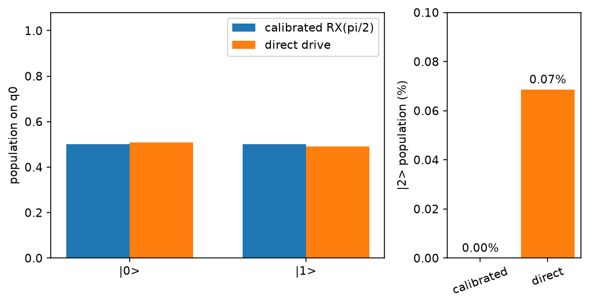

Emulate a superconducting system¶
A transmon is operated as a qubit but modeled with at least three levels.
TransmonEmulator keeps the third level so that
pulse-induced leakage remains visible, alongside timing and coupling effects.
It uses the shared Hamiltonian-emulation workflow.
Load a reproducible baseline¶
The packaged document describes one physical transmon. It is a simulation baseline, not a live calibration from a named device:
>>> import numpy as np
>>> import fatqat as fq
>>> import fatqat.operations as ops
>>> model_document = fq.emulator.load_model_document("transmon.single")
>>> model_document["parameters"]["subsystems"]["q0"]["frequency"]
5.1
>>> model = fq.emulator.TransmonModel.from_document(model_document)
>>> model.subsystem_ids
('q0',)
>>> backend = fq.emulator.TransmonEmulator(model, method="density_matrix")
Program qubits bind to those subsystem IDs in declaration order unless a
ResourceLayout says otherwise. Every model transmon remains
in the physical state even when the Program addresses only one of them.
Retain model_document when you need persisted frequencies, anharmonicities,
model identity, or coupling topology; the runtime model intentionally exposes
execution capabilities rather than normalized copies of those records.
This guide chooses the density-matrix method because it repeatedly inspects
populations. The common default is method="statevector"; use
method="unitary" when the complete coherent operator is the result you need.
Start with a transmon grid¶
To try a rectangular grid without writing model and calibration documents by hand, generate a matching pair and use it to create the emulator:
>>> model_document, calibration_document = fq.emulator.generate_transmon_grid_documents(
... shape=(2, 2),
... frequency_groups_ghz=(5.0, 5.2),
... seed=0,
... )
>>> grid_model = fq.emulator.TransmonModel.from_document(model_document)
>>> grid_calibration = fq.emulator.TransmonCalibration(
... calibration_document
... )
>>> grid_gate_map = fq.emulator.default_transmon_gate_implementation_map(
... model=grid_model,
... calibration=grid_calibration,
... )
>>> grid_backend = fq.emulator.TransmonEmulator(
... grid_model,
... gate_implementation_map=grid_gate_map,
... )
>>> grid_model.subsystem_ids
('q0', 'q1', 'q2', 'q3')
This helper is a convenient way to get a simulation running. It places the two frequency groups in a checkerboard pattern, adds the requested frequency spread, and supplies fixed analytic gate recipes. It does not numerically calibrate the pulses or calculate their fidelity or leakage.
For each edge, the helper chooses the transmon with the higher idle frequency as the detuned endpoint for CZ. This gives the generated grid a consistent default; it is not a recommendation for a particular device.
The returned documents are ordinary dictionaries. You can edit them directly or save them as JSON and load them again later:
import json
with open("model.json", "w", encoding="utf-8") as stream:
json.dump(model_document, stream, indent=2)
with open("calibration.json", "w", encoding="utf-8") as stream:
json.dump(calibration_document, stream, indent=2)
with open("model.json", encoding="utf-8") as stream:
saved_model = fq.emulator.TransmonModel.from_document(json.load(stream))
with open("calibration.json", encoding="utf-8") as stream:
saved_calibration = fq.emulator.TransmonCalibration(json.load(stream))
For N transmons, the physical qutrit Hilbert-space dimension is 3**N.
The frequency warnings cover the generated idle frequencies only. The RWA model does not simulate laboratory-frequency collisions. If a pulse tunes the qubit frequencies, check separately that relevant qubits and spectators do not cross during the ramp, park, or return.
Run the rotation as a calibrated gate¶
Reuse the guide's central rotation as an ordinary Program operation. The emulator realizes it with its gate implementation map and reference calibration:
>>> rotation = fq.Program(1)
>>> rotation.add(ops.RX(np.pi / 2), 0)
>>> calibrated_rho = backend.run(rotation).result().get_density_matrix()
>>> calibrated_rho.shape
(3, 3)
The Program declares one qubit, and the result covers all three levels of the physical transmon:
>>> calibrated_populations = np.real(np.diag(calibrated_rho))
>>> np.allclose(calibrated_populations.sum(), 1.0)
True
>>> bool(calibrated_populations[2] < 1e-6)
True
Here calibrated_populations[2] is population in physical level |2>. This
level models transmon leakage; it is not a qutrit declared by the Program.
Drive the transmon directly¶
Use a PulseOperation when the waveform is
part of the experiment. This example uses a Hann envelope with the same
nominal \(\pi/2\) area as the calibrated rotation:
>>> duration = 10.0
>>> times = np.linspace(0.0, duration, 41)
>>> rabi_rate = (np.pi / duration) * np.sin(np.pi * times / duration) ** 2
>>> drive = fq.emulator.SampledWaveform(
... tuple(times),
... tuple(rabi_rate),
... )
>>> control = fq.emulator.PulseControl(model.control.drive("q0"), drive)
>>> direct = fq.Program(1)
>>> direct.add(ops.PulseOperation(duration, (control,)))
>>> direct_rho = backend.run(direct).result().get_density_matrix()
>>> direct_populations = np.real(np.diag(direct_rho))
>>> np.round(direct_populations, 3)
array([0.509, 0.491, 0.001])
>>> f"{100 * direct_populations[2]:.2f}%"
'0.07%'
The waveform samples are the full complex Rabi rate \(\Omega(t)\) in rad/ns.
Real samples drive the X quadrature; imaginary samples drive the Y quadrature.
The analytic Hann envelope has area \(\pi/2\), and the sampled spline closely
approximates it. The 10 ns direct pulse is shorter and stronger than the
reference recipe's 20 ns RX pulse, and it omits that recipe's DRAG
corrections. Those differences account for the changed populations and the
reported |2> leakage. Both pulses use fixed analytic values rather than
numerical calibration.
For a complete amplitude scan, parameter selection, and checks on other input states, follow Calibrating a quantum gate.
SampledWaveform uses the endpoint values you provide. It does not taper a
waveform or require it to start and finish at zero; this example does both
explicitly through the envelope.

Reproduce this figure
import matplotlib.pyplot as plt
import numpy as np
import fatqat as fq
import fatqat.operations as ops
model = fq.emulator.TransmonModel.from_document(
fq.emulator.load_model_document("transmon.single")
)
backend = fq.emulator.TransmonEmulator(model, method="density_matrix")
calibrated = fq.Program(1)
calibrated.add(ops.RX(np.pi / 2), 0)
calibrated_rho = backend.run(calibrated).result().get_density_matrix()
duration = 10.0
times = np.linspace(0.0, duration, 41)
rabi_rate = (np.pi / duration) * np.sin(np.pi * times / duration) ** 2
waveform = fq.emulator.SampledWaveform(
tuple(times),
tuple(rabi_rate),
)
control = fq.emulator.PulseControl(model.control.drive("q0"), waveform)
direct = fq.Program(1)
direct.add(ops.PulseOperation(duration, (control,)))
direct_rho = backend.run(direct).result().get_density_matrix()
calibrated_populations = np.real(np.diag(calibrated_rho))
direct_populations = np.real(np.diag(direct_rho))
assert np.allclose(calibrated_populations.sum(), 1.0)
assert np.allclose(direct_populations.sum(), 1.0)
levels = np.arange(2)
width = 0.36
fig, (population_ax, leakage_ax) = plt.subplots(
1,
2,
figsize=(7.2, 3.8),
gridspec_kw={"width_ratios": (2.5, 1.0)},
)
population_ax.bar(
levels - width / 2,
calibrated_populations[:2],
width,
label="calibrated RX(pi/2)",
)
population_ax.bar(
levels + width / 2,
direct_populations[:2],
width,
label="direct drive",
)
population_ax.set(
xticks=levels,
xticklabels=("|0>", "|1>"),
ylabel="population on q0",
ylim=(0.0, 1.08),
)
population_ax.legend()
leakage_bars = leakage_ax.bar(
("calibrated", "direct"),
100 * np.array((calibrated_populations[2], direct_populations[2])),
color=("C0", "C1"),
)
leakage_ax.bar_label(leakage_bars, fmt="%.2f%%", padding=3)
leakage_ax.set(ylabel="|2> population (%)")
leakage_ax.set_ylim(0.0, max(0.1, 120 * direct_populations[2]))
leakage_ax.tick_params(axis="x", rotation=20)
fig.tight_layout()
Reference pulse model¶
The packaged calibration is a fixed analytic reference for simulation. Grid calibrations use the same pulse shapes, with deterministic rules choosing the CZ branch and filling in the recipe. Neither path numerically calibrates the pulses, fits them to hardware, or guarantees high fidelity or low leakage.
The emulator keeps three levels per transmon and uses an effective rotating- frame/RWA Hamiltonian. In the solver, \(\alpha_i\), \(\delta_i\), \(\Omega_i\), and \(g_{ij}\) are angular rates:
Here \(a_i\) is the three-level lowering operator. The signed anharmonicity \(\alpha_i\) is the only coherent drift. Drive, detuning, and exchange appear only while their controls are active. In particular, there is no static exchange. Exchange is allowed only on a declared model edge; generated rectangular grids connect horizontal and vertical nearest neighbours.
The reference iSwap is a 40 ns Hann exchange pulse. For duration \(T\),
so \(\int_0^T g_{ij}(t)\,dt=-\pi/2\). A frame swap after the pulse gives the public \(+i\) convention. The full qutrit exchange operator also couples \(\lvert11\rangle\) to \(\lvert20\rangle\) and \(\lvert02\rangle\), so conditional-phase error and residual leakage remain possible.
For CZ, label the selected endpoint \(i\). In a basis that lists it first, the chosen branch is \(\lvert11\rangle\leftrightarrow\lvert20\rangle\). The recipe parks that endpoint with \(\delta_i(t)=-\alpha_i s(t)\). For total duration \(T\) and ramp time \(t_r\),
Exchange is active only during the parked interval \(T_p=T-2t_r\):
The nominal resonant branch closes one cycle, and a frame update removes the local phase accumulated from detuning. The defaults are 60 ns total with 3 ns ramps.
Because exchange is zero during the ramps, this recipe does not model Landau–Zener leakage from crossing an avoided crossing with finite coupling. It also omits a tunable coupler, residual exchange, waveform distortion, and non-RWA terms. Final leakage can therefore be tiny even when the transient \(\lvert20\rangle\) population is large. Changing the duration preserves the nominal exchange area; it does not recalibrate phases or fidelity.
Know when more physics changes the answer¶
- Coupling: two-transmon gates are available only on coupling edges in the model, and an unaddressed neighbour is still part of the Hamiltonian.
- Frames and timing: calibrated frame changes and the placement of later controls can change phases even when computational populations look alike. Returned states include terminal virtual-frame changes.
- Continuous noise: rate- or time-form Lindblad declarations act over elapsed physical time, rather than once at a circuit-operation boundary.
Use the calibrated path to study the supplied gate recipe. Use direct controls when the waveform itself is the experiment; the two forms can also coexist in one Program. The transmon emulator API lists the supported units, gates, noise forms, and execution methods.